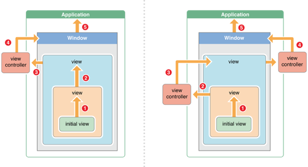

前言：
按照时间顺序，事件的生命周期是这样的： 事件的产生和传递（事件如何从父控件传递到子控件并寻找到最合适的view、寻找最合适的view的底层实现、拦截事件的处理）->找到最合适的view后事件的处理（touches方法的重写，也就是事件的响应） 其中重点和难点是： 1. 如何寻找最合适的view 2. 寻找最合适的view的底层实现（hitTest:withEvent:底层实现）
（一）iOS中的事件
iOS中的事件可以分为3大类型：
- 触摸事件
- 加速计事件
- 远程控制事件
这里我们只讨论iOS中的触摸事件。
1.1. 响应者对象(UIResponder) 学习触摸事件首先要了解一个比较重要的概念-响应者对象（UIResponder）。
在iOS中不是任何对象都能处理事件，只有继承了UIResponder的对象才能接受并处理事件，我们称之为“响应者对象”。以下都是继承自UIResponder的，所以都能接收并处理事件。
- UIApplication
- UIViewController
- UIView
那么为什么继承自UIResponder的类就能够接收并处理事件呢？
- 因为UIResponder中提供了以下4个对象方法来处理触摸事件。
UIResponder内部提供了以下方法来处理事件触摸事件
- (void)touchesBegan:(NSSet *)touches withEvent:(UIEvent *)event;
- (void)touchesMoved:(NSSet *)touches withEvent:(UIEvent *)event;
- (void)touchesEnded:(NSSet *)touches withEvent:(UIEvent *)event;
- (void)touchesCancelled:(NSSet *)touches withEvent:(UIEvent *)event;
加速计事件
- (void)motionBegan:(UIEventSubtype)motion withEvent:(UIEvent *)event;
- (void)motionEnded:(UIEventSubtype)motion withEvent:(UIEvent *)event;
- (void)motionCancelled:(UIEventSubtype)motion withEvent:(UIEvent *)event;
远程控制事件
- (void)remoteControlReceivedWithEvent:(UIEvent *)event;
（二）事件的处理
下面以UIView为例来说明触摸事件的处理。
// UIView是UIResponder的子类，可以覆盖下列4个方法处理不同的触摸事件
// 一根或者多根手指开始触摸view，系统会自动调用view的下面方法
- (void)touchesBegan:(NSSet *)touches withEvent:(UIEvent *)event
// 一根或者多根手指在view上移动，系统会自动调用view的下面方法（随着手指的移动，会持续调用该方法）
- (void)touchesMoved:(NSSet *)touches withEvent:(UIEvent *)event
// 一根或者多根手指离开view，系统会自动调用view的下面方法- (void)touchesEnded:(NSSet *)touches withEvent:(UIEvent *)event
// 触摸结束前，某个系统事件(例如电话呼入)会打断触摸过程，系统会自动调用view的下面方法
- (void)touchesCancelled:(NSSet *)touches withEvent:(UIEvent *)event
// 提示：touches中存放的都是UITouch对象
需要注意的是：以上四个方法是由系统自动调用的，所以可以通过重写该方法来处理一些事件。
- 如果两根手指同时触摸一个view，那么view只会调用一次touchesBegan:withEvent:方法，touches参数中装着2个UITouch对象
- 如果这两根手指一前一后分开触摸同一个view，那么view会分别调用2次touchesBegan:withEvent:方法，并且每次调用时的touches参数中只包含一个UITouch对象
- 重 写以上四个方法，如果是处理UIView的触摸事件。必须要自定义UIView子类继承自UIView。因为苹果不开源，没有把UIView的.m文件提 供给我们。我们只能通过子类继承父类，重写子类方法的方式处理UIView的触摸事件（注意：我说的是UIView触摸事件而不是说的 UIViewController的触摸事件）。
- 如果是处理UIViewController的触摸事件，那么在控制器的.m文件中直接重写那四个方法即可！
自定义UIView的.h文件
#import <UIKit/UIKit.h>
@interface WSView : UIView
@end
自定义UIView的.m文件
#import "WSView.h"
@implementation WSView
// 开始触摸时就会调用一次这个方法
- (void)touchesBegan:(NSSet *)touches withEvent:(UIEvent *)event{
NSLog(@"摸我干啥！");
}
// 手指移动就会调用这个方法
// 这个方法调用非常频繁
- (void)touchesMoved:(NSSet *)touches withEvent:(UIEvent *)event{
NSLog(@"哎呀，不要拽人家！");
}
// 手指离开屏幕时就会调用一次这个方法
- (void)touchesEnded:(NSSet *)touches withEvent:(UIEvent *)event{
NSLog(@"手放开还能继续玩耍！");
}
@end
控制器的.m文件
#import "ViewController.h"
#import "WSView.h"
@interface ViewController ()
@end@implementation ViewController
- (void)viewDidLoad {
[super viewDidLoad];
// 创建自定义view
WSView *touchView = [[WSView alloc] initWithFrame:CGRectMake(100, 100, 100, 100)];
// 背景颜色
touchView.backgroundColor = [UIColor redColor];
// 添加到父控件
[self.view addSubview:touchView];
}
@end
注 意：有人认为，我要是处理控制器的自带的view的事件就不需要自定义UIView子类继承于UIView，因为可以在viewController.m 文件中重写touchBegan:withEvent:方法，但是，我们此处讨论的是处理UIView的触摸事件，而不是处理 UIViewController的触摸事件。你如果是在viewController.m文件中重写touchBegan:withEvent:方法，相当于处理的是viewController的触摸事件，因为viewController也是继承自UIResponder，所以会给人一种错觉。
所以，还是那句话，想处理UIView的触摸事件，必须自定义UIView子类继承自UIView。
2.1.UIView的拖拽
那么，如何实现UIView的拖拽呢?也就是让UIView随着手指的移动而移动。 - 重写touchsMoved:withEvent: 方法此时需要用到参数touches，下面是UITouch的属性和方法：
NS_CLASS_AVAILABLE_IOS(2_0) @interface UITouch : NSObject
@property(nonatomic,readonly) NSTimeInterval timestamp;
@property(nonatomic,readonly) UITouchPhase phase;
@property(nonatomic,readonly) NSUInteger tapCount; // touch down within a certain point within a certain amount of time
// majorRadius and majorRadiusTolerance are in points
// The majorRadius will be accurate +/- the majorRadiusTolerance
@property(nonatomic,readonly) CGFloat majorRadius NS_AVAILABLE_IOS(8_0);
@property(nonatomic,readonly) CGFloat majorRadiusTolerance NS_AVAILABLE_IOS(8_0);
@property(nullable,nonatomic,readonly,strong) UIWindow *window;
@property(nullable,nonatomic,readonly,strong) UIView *view;
@property(nullable,nonatomic,readonly,copy) NSArray <UIGestureRecognizer *> *gestureRecognizers NS_AVAILABLE_IOS(3_2);
- (CGPoint)locationInView:(nullable UIView *)view;
- (CGPoint)previousLocationInView:(nullable UIView *)view;
// Force of the touch, where 1.0 represents the force of an average touch
@property(nonatomic,readonly) CGFloat force NS_AVAILABLE_IOS(9_0);
// Maximum possible force with this input mechanism
@property(nonatomic,readonly) CGFloat maximumPossibleForce NS_AVAILABLE_IOS(9_0);
2.1.1.UITouch对象
当用户用一根手指触摸屏幕时，会创建一个与手指相关的UITouch对象
一根手指对应一个UITouch对象
如果两根手指同时触摸一个view，那么view只会调用一次touchesBegan:withEvent:方法，touches参数中装着2个UITouch对象
如果这两根手指一前一后分开触摸同一个view，那么view会分别调用2次touchesBegan:withEvent:方法，并且每次调用时的touches参数中只包含一个UITouch对象
2.1.1.1.UITouch的作用
- 保存着跟手指相关的信息，比如触摸的位置、时间、阶段
- 当手指移动时，系统会更新同一个UITouch对象，使之能够一直保存该手指在的触摸位置
- 当手指离开屏幕时，系统会销毁相应的UITouch对象 提 示:iPhone开发中，要避免使用双击事件！
2.1.1.2.UITouch的属性
触摸产生时所处的窗口
@property(nonatomic,readonly,retain) UIWindow *window;
触摸产生时所处的视图
@property(nonatomic,readonly,retain) UIView *view
;
短时间内点按屏幕的次数，可以根据tapCount判断单击、双击或更多的点击
@property(nonatomic,readonly) NSUInteger tapCount;
记录了触摸事件产生或变化时的时间，单位是秒@property(nonatomic,readonly) NSTimeInterval timestamp;
当前触摸事件所处的状态
@property(nonatomic,readonly) UITouchPhase phase;
2.1.1.3.UITouch的方法
(CGPoint)locationInView:(UIView *)view;
// 返回值表示触摸在view上的位置
// 这里返回的位置是针对view的坐标系的（以view的左上角为原点(0, 0)）
// 调用时传入的view参数为nil的话，返回的是触摸点在UIWindow的位置
(CGPoint)previousLocationInView:(UIView *)view;
// 该方法记录了前一个触摸点的位置
代码实现：
- (void)touchesMoved:(NSSet *)touches withEvent:(UIEvent *)event{
// 想让控件随着手指移动而移动,监听手指移动
// 获取UITouch对象
UITouch *touch = [touches anyObject];
// 获取当前点的位置
CGPoint curP = [touch locationInView:self];
// 获取上一个点的位置
CGPoint preP = [touch previousLocationInView:self];
// 获取它们x轴的偏移量,每次都是相对上一次
CGFloat offsetX = curP.x - preP.x;
// 获取y轴的偏移量
CGFloat offsetY = curP.y - preP.y;
// 修改控件的形变或者frame,center,就可以控制控件的位置
// 形变也是相对上一次形变(平移)
// CGAffineTransformMakeTranslation:会把之前形变给清空,重新开始设置形变参数
// make:相对于最原始的位置形变
// CGAffineTransform t:相对这个t的形变的基础上再去形变
// 如果相对哪个形变再次形变,就传入它的形变
self.transform = CGAffineTransformTranslate(self.transform, offsetX, offsetY);}
（三）iOS中的事件的产生和传递
3.1.事件的产生
- 发生触摸事件后，系统会将该事件加入到一个由UIApplication管理的事件队列中为什么是队列而不是栈？因为队列的特定是先进先出，先产生的事件先处理才符合常理，所以把事件添加到队列。
- UIApplication会从事件队列中取出最前面的事件，并将事件分发下去以便处理，通常，先发送事件给应用程序的主窗口（keyWindow）。
主窗口会在视图层次结构中找到一个最合适的视图来处理触摸事件，这也是整个事件处理过程的第一步。找到合适的视图控件后，就会调用视图控件的touches方法来作具体的事件处理。
3.2.事件的传递
触摸事件的传递是从父控件传递到子控件
- 也就是UIApplication->window->寻找处理事件最合适的view
注 意: 如果父控件不能接受触摸事件，那么子控件就不可能接收到触摸事件
应用如何找到最合适的控件来处理事件？
- 首先判断主窗口（keyWindow）自己是否能接受触摸事件
- 判断触摸点是否在自己身上
- 子控件数组中从后往前遍历子控件，重复前面的两个步骤（所谓从后往前遍历子控件，就是首先查找子控件数组中最后一个元素，然后执行1、2步骤）
- view，比如叫做fitView，那么会把这个事件交给这个fitView，再遍历这个fitView的子控件，直至没有更合适的view为止。
- 如果没有符合条件的子控件，那么就认为自己最合适处理这个事件，也就是自己是最合适的view。
UIView不能接收触摸事件的三种情况：
不允许交互：userInteractionEnabled = NO
隐藏：如果把父控件隐藏，那么子控件也会隐藏，隐藏的控件不能接受事件
透明度：如果设置一个控件的透明度<0.01，会直接影响子控件的透明度。alpha：0.0~0.01为透明。
注 意:默认UIImageView不能接受触摸事件，因为不允许交互，即userInteractionEnabled = NO，所以如果希望UIImageView可以交互，需要userInteractionEnabled = YES。
总结一下
- 点击一个UIView或产生一个触摸事件A，这个触摸事件A会被添加到由UIApplication管理的事件队列中（即，首先接收到事件的是UIApplication）。
- UIApplication会从事件对列中取出最前面的事件（此处假设为触摸事件A），把事件A传递给应用程序的主窗口（keyWindow）。
- 窗口会在视图层次结构中找到一个最合适的视图来处理触摸事件。（至此，第一步已完成）
如果想让某个view不能接收事件（或者说，事件传递到某个view那里就断了），那么可以通过刚才提到的三种方式。比如，设置其userInteractionEnabled = NO;那么传递下来的事件就会由该view的父控件处理。 例如，不想让蓝色的view接收事件，那么可以设置蓝色的view的userInteractionEnabled = NO;那么点击黄色的view或者蓝色的view所产生的事件，橙色的view就会成为最合适的view。事件都会由橙色的veiw处理。 所以，不管视图能不能处理事件，只要点击了视图就都会产生事件，关键看该事件是由谁来处理！也就是说，如果视图不能处理事件，点击视图，还是会产生一个触摸事件，只是该事件不会由被点击的视图处理而已！ 注意：如果设置父控件的透明度或者hidden，会直接影响到子控件的透明度和hidden。如果父控件的透明度为0或者hidden = YES，那么子控件也是不可见的！
3.3.（重难点）如何寻找最合适的view
应用如何找到最合适的控件来处理事件？
- 首先判断主窗口（keyWindow）自己是否能接受触摸事件
- 触摸点是否在自己身上
- 从后往前遍历子控件，重复前面的两个步骤（首先查找数组中最后一个元素）
- 如果没有符合条件的子控件，那么就认为自己最合适处理
详述：
- 主窗口接收到应用程序传递过来的事件后，首先判断自己能否接手触摸事件。如果能，那么在判断触摸点在不在窗口自己身上
- 如果触摸点也在窗口身上，那么窗口会从后往前遍历自己的子控件（遍历自己的子控件只是为了寻找出来最合适的view）
- 遍历到每一个子控件后，又会重复上面的两个步骤（传递事件给子控件，1.判断子控件能否接受事件，2.点在不在子控件上）
- 如此循环遍历子控件，直到找到最合适的view，如果没有更合适的子控件，那么自己就成为最合适的view。找到最合适的view后，就会调用该view的touches方法处理具体的事件。所以，只有找到最合适的view，把事件传递给最合适的view后，才会调用touches方法进行接下来的事件处理。找不到最合适的view，就不会调用touches方法进行事件处理。
注意：之所以会采取从后往前遍历子控件的方式寻找最合适的view只是为了做一些循环优化。因为相比较之下，后添加的view在上面，降低循环次数。
3.3.1.寻找最合适的view底层剖析
两个重要的方法：
hitTest:withEvent:方法pointInside方法3.3.1.1.hitTest：withEvent：方法
什么时候调用？
- 只要事件一传递给一个控件,这个控件就会调用他自己的
hitTest：withEvent：方法
作用
- 寻找并返回最合适的view(能够响应事件的那个最合适的view)
注 意：不管这个控件能不能处理事件，也不管触摸点在不在这个控件上，事件都会先传递给这个控件，随后再调用hitTest:withEvent:方法
拦截事件的处理
- 正因为
hitTest：withEvent：方法可以返回最合适的view，所以可以通过重写hitTest：withEvent：方法，返回指定的view作为最合适的view。- 不管点击哪里，最合适的view都是
hitTest：withEvent：方法中返回的那个view。
- 不管点击哪里，最合适的view都是
- 通过重写
hitTest：withEvent：，就可以拦截事件的传递过程，想让谁处理事件谁就处理事件。
事件传递给谁，就会调用谁的hitTest:withEvent:方法。
注 意：如果hitTest:withEvent:方法中返回nil，那么调用该方法的控件本身和其子控件都不是最合适的view，也就是在自己身上没有找到更合适的view。那么最合适的view就是该控件的父控件。
所以事件的传递顺序是这样的： 产生触摸事件->UIApplication事件队列->[UIWindow hitTest:withEvent:]->返回更合适的view->[子控件 hitTest:withEvent:]->返回最合适的view
事件传递给窗口或控件的后，就调用hitTest:withEvent:方法寻找更合适的view。所以是，先传递事件，再根据事件在自己身上找更合适的view。不管子控件是不是最合适的view，系统默认都要先把事件传递给子控件，经过子控件调用自己的hitTest:withEvent:方法验证后才知道有没有更合适的view。即便父控件是最合适的view了，子控件的hitTest:withEvent:方法还是会调用，不然怎么知道有没有更合适的！即，如果确定最终父控件是最合适的view，那么该父控件的子控件的hitTest:withEvent:方法也是会被调用的。
技巧：想让谁成为最合适的view就重写谁自己的父控件的hitTest:withEvent:方法返回指定的子控件，或者重写自己的hitTest:withEvent:方法 return self。但是，建议在父控件的hitTest:withEvent:中返回子控件作为最合适的view！
原因在于在自己的hitTest:withEvent:方法中返回自己有时候会出现问题，因为会存在这么一种情况，当遍历子控件时，如果触摸点不在子控件A自己身上而是在子控件B身上，还要要求返回子控件A作为最合适的view，采用返回自己的方法可能会导致还没有来得及遍历A自己，就有可能已经遍历了点真正所在的view，也就是B。这就导致了返回的不是自己而是点真正所在的view。所以还是建议在父控件的hitTest:withEvent:中返回子控件作为最合适的view！
例如：whiteView有redView和greenView两个子控件。redView先添加，greenView后添加。如果要求无论点击那里都要让redView作为最合适的view（把事件交给redView来处理）那么只能在whiteView的hitTest:withEvent:方法中return self.subViews[0];这种情况下在redView的hitTest:withEvent:方法中return self;是不好使的！
// 这里redView是whiteView的第0个子控件
#import "redView.h"
@implementation redView
- (UIView *)hitTest:(CGPoint)point withEvent:(UIEvent *)event{
return self;
}
- (void)touchesBegan:(NSSet *)touches withEvent:(UIEvent *)event{
NSLog(@"red-touch");
}@end
// 或者
#import "whiteView.h"
@implementation whiteView
- (UIView *)hitTest:(CGPoint)point withEvent:(UIEvent *)event{
return self.subviews[0];
}
- (void)touchesBegan:(NSSet *)touches withEvent:(UIEvent *)event{
NSLog(@"white-touch");
}
@end
特殊情况：谁都不能处理事件，窗口也不能处理。
- 重写window的hitTest：withEvent：方法return nil
只能有窗口处理事件。
- 控制器的view的hitTest：withEvent：方法return nil或者window的hitTest：withEvent：方法return self
return nil的含义： hitTest：withEvent：中return nil的意思是调用当前hitTest：withEvent：方法的view不是合适的view，子控件也不是合适的view。如果同级的兄弟控件也没有合适的view，那么最合适的view就是父控件。
寻找最合适的view底层剖析之hitTest：withEvent：方法底层做法/ hitTest:withEvent:方法底层实现/
#import "WSWindow.h"
@implementation WSWindow
// 什么时候调用:只要事件一传递给一个控件，那么这个控件就会调用自己的这个方法
// 作用:寻找并返回最合适的view
// UIApplication -> [UIWindow hitTest:withEvent:]寻找最合适的view告诉系统
// point:当前手指触摸的点
// point:是方法调用者坐标系上的点
- (UIView *)hitTest:(CGPoint)point withEvent:(UIEvent *)event{
// 1.判断下窗口能否接收事件
if (self.userInteractionEnabled == NO || self.hidden == YES || self.alpha <= 0.01) return nil;
// 2.判断下点在不在窗口上
// 不在窗口上
if ([self pointInside:point withEvent:event] == NO) return nil;
// 3.从后往前遍历子控件数组
int count = (int)self.subviews.count;
for (int i = count - 1; i >= 0; i--) {
// 获取子控件
UIView *childView = self.subviews[i];
// 坐标系的转换,把窗口上的点转换为子控件上的点
// 把自己控件上的点转换成子控件上的点
CGPoint childP = [self convertPoint:point toView:childView];
UIView *fitView = [childView hitTest:childP withEvent:event];
if (fitView) {
// 如果能找到最合适的view
return fitView;
}
}
// 4.没有找到更合适的view，也就是没有比自己更合适的view
return self;
}
// 作用:判断下传入过来的点在不在方法调用者的坐标系上
// point:是方法调用者坐标系上的点
//- (BOOL)pointInside:(CGPoint)point withEvent:(UIEvent *)event
//{
// return NO;
//}
- (void)touchesBegan:(NSSet *)touches withEvent:(UIEvent *)event{
NSLog(@"%s",__func__);
}
@end
hit:withEvent:方法底层会调用pointInside:withEvent:方法判断点在不在方法调用者的坐标系上。
3.3.1.2.pointInside:withEvent:方法
pointInside:withEvent:方法判断点在不在当前view上（方法调用者的坐标系上）如果返回YES，代表点在方法调用者的坐标系上;返回NO代表点不在方法调用者的坐标系上，那么方法调用者也就不能处理事件。
（四）事件的响应
4.1.触摸事件处理的整体过程
1>用户点击屏幕后产生的一个触摸事件，经过一系列的传递过程后，会找到最合适的视图控件来处理这个事件2>找到最合适的视图控件后，就会调用控件的touches方法来作具体的事件处理touchesBegan…touchesMoved…touchedEnded…3>这些touches方法的默认做法是将事件顺着响应者链条向上传递（也就是touch方法默认不处理事件，只传递事件），将事件交给上一个响应者进行处理
4.2.响应者链条示意图
响应者链条：在iOS程序中无论是最后面的UIWindow还是最前面的某个按钮，它们的摆放是有前后关系的，一个控件可以放到另一个控件上面或下面，那么用户点击某个控件时是触发上面的控件还是下面的控件呢，这种先后关系构成一个链条就叫“响应者链”。也可以说，响应者链是由多个响应者对象连接起来的链条。在iOS中响应者链的关系 可以用下图表示： 
响应者对象：能处理事件的对象，也就是继承自UIResponder的对象 作用：能很清楚的看见每个响应者之间的联系，并且可以让一个事件多个对象处理。
如何判断上一个响应者
- 如果当前这个view是控制器的view,那么控制器就是上一个响应者
- 如果当前这个view不是控制器的view,那么父控件就是上一个响应者
响应者链的事件传递过程:
- 如果当前view是控制器的view，那么控制器就是上一个响应者，事件就传递给控制器；如果当前view不是控制器的view，那么父视图就是当前view的上一个响应者，事件就传递给它的父视图
- 在视图层次结构的最顶级视图，如果也不能处理收到的事件或消息，则其将事件或消息传递给window对象进行处理
- 如果window对象也不处理，则其将事件或消息传递给UIApplication对象
- 如果UIApplication也不能处理该事件或消息，则将其丢弃
事件处理的整个流程总结：
- 触摸屏幕产生触摸事件后，触摸事件会被添加到由UIApplication管理的事件队列中（即，首先接收到事件的是UIApplication）。
- UIApplication会从事件队列中取出最前面的事件，把事件传递给应用程序的主窗口（keyWindow）。
- 主窗口会在视图层次结构中找到一个最合适的视图来处理触摸事件。（至此，第一步已完成)
最合适的view会调用自己的touches方法处理事件 5.touches默认做法是把事件顺着响应者链条向上抛。
touches的默认做法：
#import "WSView.h"
@implementation WSView
//只要点击控件,就会调用touchBegin,如果没有重写这个方法,自己处理不了触摸事件
// 上一个响应者可能是父控件
- (void)touchesBegan:(NSSet *)touches withEvent:(UIEvent *)event{
// 默认会把事件传递给上一个响应者,上一个响应者是父控件,交给父控件处理
[super touchesBegan:touches withEvent:event];
// 注意不是调用父控件的touches方法，而是调用父类的touches方法
// super是父类 superview是父控件
}
@end
事件的传递与响应：
1、当一个事件发生后，事件会从父控件传给子控件，也就是说由UIApplication -> UIWindow -> UIView -> initial view,以上就是事件的传递，也就是寻找最合适的view的过程。
2、接下来是事件的响应。首先看initial view能否处理这个事件，如果不能则会将事件传递给其上级视图（inital view的superView）；如果上级视图仍然无法处理则会继续往上传递；一直传递到视图控制器view controller，首先判断视图控制器的根视图view是否能处理此事件；如果不能则接着判断该视图控制器能否处理此事件，如果还是不能则继续向上传 递；（对于第二个图视图控制器本身还在另一个视图控制器中，则继续交给父视图控制器的根视图，如果根视图不能处理则交给父视图控制器处理）；一直到 window，如果window还是不能处理此事件则继续交给application处理，如果最后application还是不能处理此事件则将其丢弃
3、在事件的响应中，如果某个控件实现了touches...方法，则这个事件将由该控件来接受，如果调用了[supertouches….];就会将事件顺着响应者链条往上传递，传递给上一个响应者；接着就会调用上一个响应者的touches….方法
如何做到一个事件多个对象处理： 因为系统默认做法是把事件上抛给父控件，所以可以通过重写自己的touches方法和父控件的touches方法来达到一个事件多个对象处理的目的。
- (void)touchesBegan:(NSSet *)touches withEvent:(UIEvent *)event{
// 1.自己先处理事件...
NSLog(@"do somthing...");
// 2.再调用系统的默认做法，再把事件交给上一个响应者处理
[super touchesBegan:touches withEvent:event];
}
事件的传递和响应的区别：事件的传递是从上到下（父控件到子控件），事件的响应是从下到上（顺着响应者链条向上传递：子控件到父控件。
来自简书作者： VV木公子